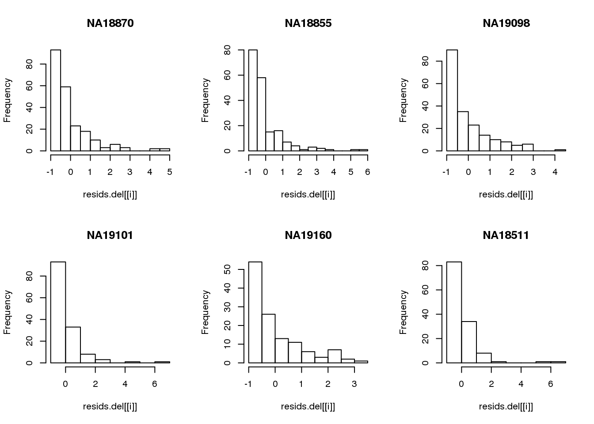
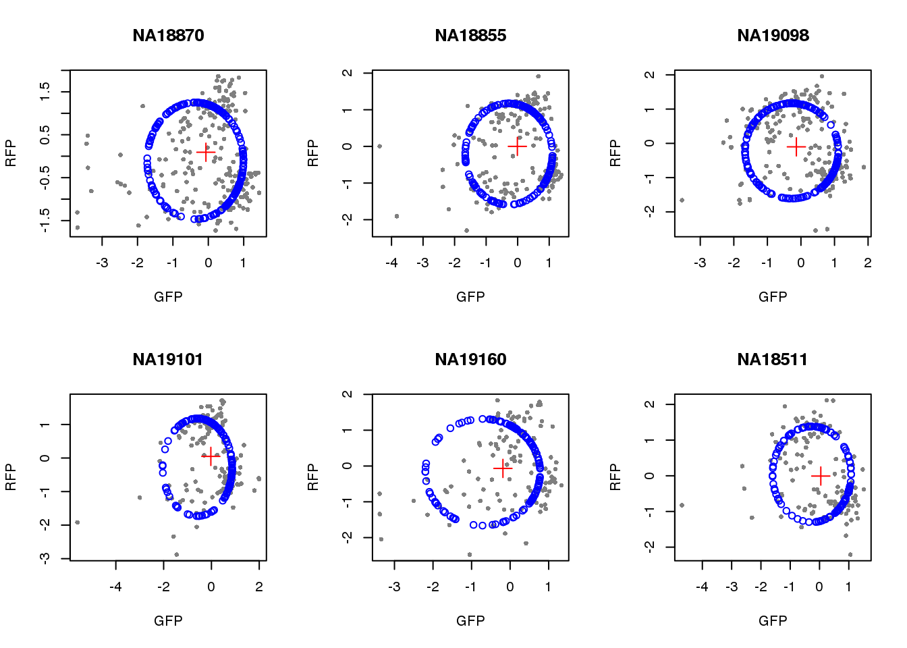

Circle fit to intensities
Joyce Hsiao
Last updated: 2018-02-22
Code version: be8a2ca
Overview/Results
Here we estimate a circle fit on the two-dimensional intensity distriubtion of GFP and RFP.
Data and packages
Packages
library(circular)
library(conicfit)
library(Biobase)
library(dplyr)
library(matrixStats)
library(CorShrink)
source("../code/circle.intensity.fit.R")Load data
df <- readRDS(file="../data/eset-filtered.rds")
pdata <- pData(df)
fdata <- fData(df)
# select endogeneous genes
counts <- exprs(df)[grep("ENSG", rownames(df)), ]
# log2cpm <- readRDS("../output/seqdata-batch-correction.Rmd/log2cpm.rds")
# log2cpm.adjust <- readRDS("../output/seqdata-batch-correction.Rmd/log2cpm.adjust.rds")
# import corrected intensities
pdata.adj <- readRDS("../output/images-normalize-anova.Rmd/pdata.adj.rds")visualize intensity data on a circle. project intensity data onto radians and the visualize the fitting on circles. then use cellcycleR to perform fitting and compare the model fitting with the projection results. it seems that the predicted ordering is especially bad for the gree intensities, which have many outliers. another reason I suspect isthat it attemps to fit similar amplitude/phase parameters to the green and red intensities.
Circle fitting
Based on all data.
source("../code/circle.intensity.fit.R")
sample_names <- rownames(pdata.adj)
pdata.adj <- pdata.adj %>% group_by(chip_id) %>%
mutate(rfp.z=scale(rfp.median.log10sum.adjust),
gfp.z=scale(gfp.median.log10sum.adjust),
dapi.z=scale(dapi.median.log10sum.adjust))
rownames(pdata.adj) <- sample_names
par(mfrow=c(2,3))
for(i in 1:length(unique(pdata.adj$chip_id))) {
id <- unique(as.character(pdata.adj$chip_id))[i]
df_sub <- subset(pdata.adj, chip_id == id, select=c(gfp.z, rfp.z))
cpred <- circle.fit(df_sub)
xlims <- range(df_sub[,1])
ylims <- range(df_sub[,2])
plot(df_sub, pch=16, col="gray50", xlim=xlims, ylim=ylims, cex=.7,
main = id, xlab="GFP", ylab="RFP")
points(cpred[,1], cpred[,2], col="blue", type = "p")
points(mean(cpred[,1]), mean(cpred[,2]), col="red", pch=3, cex=2)
}
Consider deleted residuals.
resids.del <- lapply(1:length(unique(pdata.adj$chip_id)), function(i) {
id <- unique(as.character(pdata.adj$chip_id))[i]
df_sub <- subset(pdata.adj, chip_id == id, select=c(gfp.z, rfp.z))
resids <- circle.fit.resid.delete(df_sub)
scale(resids)
})
names(resids.del) <- unique(pdata.adj$chip_id)
par(mfrow=c(2,3))
for(i in 1:length(unique(pdata.adj$chip_id))) {
# id <- unique(as.character(pdata.adj$chip_id))[i]
# df_sub <- subset(pdata.adj, chip_id == id, select=c(gfp.z, rfp.z))
hist(resids.del[[i]], main = unique(pdata.adj$chip_id)[i])
}
Remove samples with standardized residuals greater than 3.
resids.del.remove <- lapply(1:length(unique(pdata.adj$chip_id)), function(i) {
which(resids.del[[i]] > 3)
})
names(resids.del.remove) <- unique(pdata.adj$chip_id)
pdata.adj.filt <- do.call(rbind, lapply(1:length(unique(pdata.adj$chip_id)), function(i) {
id <- unique(as.character(pdata.adj$chip_id))[i]
df_sub <- pdata.adj[which(pdata.adj$chip_id == id),]
ii.remove <- resids.del.remove[[i]]
df_sub_return <- df_sub[-ii.remove,]
rownames(df_sub_return) <- (rownames(pdata.adj)[which(pdata.adj$chip_id == id)])[-ii.remove]
data.frame(df_sub_return)
}) )Visualize fit after removing outliers.
par(mfrow=c(2,3))
for(i in 1:length(unique(pdata.adj.filt$chip_id))) {
id <- unique(as.character(pdata.adj.filt$chip_id))[i]
df_sub <- subset(pdata.adj.filt, chip_id == id, select=c(gfp.z, rfp.z))
cpred <- circle.fit(df_sub)
xlims <- range(df_sub[,1])
ylims <- range(df_sub[,2])
plot(df_sub, pch=16, col="gray50", xlim=xlims, ylim=ylims, cex=.7,
main = id, xlab="GFP", ylab="RFP")
points(cpred[,1], cpred[,2], col="blue", type = "p")
points(mean(cpred[,1]), mean(cpred[,2]), col="red", pch=3, cex=2)
}
saveRDS(pdata.adj.filt,
file = "../output/images-circle-ordering.Rmd/pdata.adj.filt.rds")Project positions
pdata.adj.filt <- readRDS("../output/images-circle-ordering.Rmd/pdata.adj.filt.rds")
proj.res <- vector("list", length=length(unique((pdata.adj$chip_id))))
for(i in 1:length(unique((pdata.adj$chip_id)))) {
proj.res[[i]] <- vector("list",2)
id <- unique(as.character(pdata.adj.filt$chip_id))[i]
df_sub <- subset(pdata.adj.filt,
chip_id == id, select=c(gfp.z, rfp.z))
# sample_ids <-
cpred <- circle.fit(df_sub)
proj.res[[i]][[1]] <- data.frame(cpred, df_sub)
colnames(proj.res[[i]][[1]]) <- c("pos.pred.x", "pos.pred.y", "gfp.z", "rfp.z")
# convert projected coordinates to radians
# modulo 2*pi
proj.res[[i]][[1]]$rads <- coord2rad(cbind(proj.res[[i]][[1]]$pos.pred.x,
proj.res[[i]][[1]]$pos.pred.y))
rownames(proj.res[[i]][[1]]) <- rownames(df_sub)
# compute centers
centers <- LMcircleFit(as.matrix(df_sub), ParIni=colMeans(as.matrix(df_sub)), IterMAX=50)
proj.res[[i]][[2]] <- data.frame(x.center=centers[1], y.center=centers[2])
}
names(proj.res) <- unique(pdata.adj.filt$chip_id)Save output
saveRDS(proj.res, file = "../output/images-circle-ordering.Rmd/proj.res.rds")Plot circle fit.
proj.res <- readRDS(file = "../output/images-circle-ordering.Rmd/proj.res.rds")
par(mfrow=c(2,3))
for (i in 1:length(proj.res)) {
# xlims <- range(proj.res[[i]]$gfp.z)
# ylims <- range(proj.res[[i]]$rfp.z)
xlims <- c(-2.5, 2.5)
ylims <- c(-2.5, 2.5)
plot(subset(proj.res[[i]][[1]], select=c(gfp.z, rfp.z)),
pch=16, col="gray50", xlim=xlims, ylim=ylims, cex=.5,
main = names(proj.res)[i],
xlab = "GFP", ylab = "RFP")
points(proj.res[[i]][[1]]$pos.pred.x, proj.res[[i]][[1]]$pos.pred.y,
col="blue", pch=1)
points(proj.res[[i]][[2]]$x.center, proj.res[[i]][[2]]$y.center,
col="red", pch=3, cex=2)
}par(mfrow=c(2,3))
for (i in 1:length(proj.res)) {
plot(proj.res[[i]][[1]]$rads, stack=TRUE, bins=90,
main = names(proj.res)[i])
}Property of the circle fit
Intensity values by circle fit
pdata.adj.filtered <- readRDS("../output/images-circle-ordering.Rmd/pdata.adj.filt.rds")
proj.res <- readRDS("../output/images-circle-ordering.Rmd/proj.res.rds")
for (i in 1:length(unique(pdata.adj.filt$chip_id))) {
par(mfrow=c(2,2), mar = c(3,2,2,1))
ids <- unique(as.character(pdata.adj.filt$chip_id))
p_sub <- subset(pdata.adj.filt, chip_id == ids[i])
#all.equal(rownames(p_sub), rownames(proj.res$NA18870[[1]]))
plot(proj.res[[i]][[1]]$rads, stack=T, bins=180, main = "Distribution")
library(RColorBrewer)
color <- colorRampPalette(brewer.pal(11,"Spectral"))(11)
plot(x=as.numeric(proj.res[[i]][[1]]$rads),
y=p_sub$rfp.z, pch=16, cex=.5, col=color[1], ylim=c(-2.5, 2.5),
xlab = "Position on the circle",
ylab = "RFP", main = "RFP")
abline(h=0, lwd=.5)
plot(x=as.numeric(proj.res[[i]][[1]]$rads),
y=p_sub$gfp.z, pch=16, cex=.7, col=color[9], ylim=c(-2.5, 2.5),
xlab = "Position on the circle",
ylab = "GFP", main = "GFP")
abline(h=0, lwd=.5)
plot(x=as.numeric(proj.res[[i]][[1]]$rads),
y=p_sub$dapi.z, pch=16, cex=.7, col=color[10], ylim=c(-2.5, 2.5),
xlab = "Position on the circle",
ylab = "DAPI", main = "DAPI")
abline(h=0, lwd=.5)
title(names(proj.res)[i], outer=TRUE, line =-1)
}Expression variation by cell time
# load cell cycle genes
genes.cycle <- readRDS("../output/seqdata-select-cellcyclegenes.Rmd/genes.cycle.detect.rds")
# log2cpm
log2cpm <- readRDS("../output/seqdata-batch-correction.Rmd/log2cpm.rds")
log2cpm.adjust <- readRDS("../output/seqdata-batch-correction.Rmd/log2cpm.adjust.rds")
counts.cycle <- counts[rownames(counts) %in% genes.cycle, ]
log2cpm.cycle <- log2cpm[rownames(log2cpm) %in% genes.cycle, ]
log2cpm.adjust.cycle <- log2cpm.adjust[rownames(log2cpm.adjust) %in% genes.cycle, ]Pearson correlation
corrs <- lapply(1:length(unique(pdata.adj.filt$chip_id)), function(i) {
id <- unique(pdata.adj.filt$chip_id)[i]
log2cpm_sub <- log2cpm.adjust.cycle[, match(rownames(proj.res[[i]][[1]]), colnames(log2cpm.adjust.cycle))]
counts_sub <- counts.cycle[, match(rownames(proj.res[[i]][[1]]), colnames(counts.cycle))]
corrs <- do.call(rbind, lapply(1:nrow(counts_sub), function(g) {
vec <- cbind(as.numeric(proj.res[[i]][[1]]$rads),
log2cpm_sub[g,])
filt <- counts_sub[g,] > 1
nsamp <- sum(filt)
if (nsamp > ncol(counts_sub)/2) {
vec <- vec[filt,]
corr <- cor(vec[,1], vec[,2])
nsam <- nrow(vec)
data.frame(corr=corr, nsam=nsam)
} else {
data.frame(corr=NA, nsam=nrow(vec))
}
}))
rownames(corrs) <- rownames(counts_sub)
return(corrs)
})
names(corrs) <- unique(pdata.adj.filt$chip_id)par(mfrow=c(2,3))
for (i in 1:length(corrs)) {
hist(corrs[[i]]$corr, main = names(corrs)[i])
}
title(main = "Pearson correlation", outer = TRUE, line = -1)Apply CorShrink
par(mfrow=c(2,3))
for (i in 1:length(corrs)) {
corrs_sub <- corrs[[i]]
corr.shrink <- CorShrinkVector(corrs_sub$corr, nsamp_vec = corrs_sub$nsam,
optmethod = "mixEM", report_model = TRUE)
names(corr.shrink$estimate) <- rownames(corrs_sub)
plot(corr.shrink$model$result$betahat,
corr.shrink$model$result$PosteriorMean,
col = 1+as.numeric(corr.shrink$model$result$svalue < .01),
xlab = "Correlation", ylab = "Shrunken estimate")
abline(0,1)
title(names(corrs)[i])
}Ciruclar correlation
source("../code/corr.cl.R")
corrs.cl <- lapply(1:length(unique(pdata.adj.filt$chip_id)), function(i) {
id <- unique(pdata.adj.filt$chip_id)[i]
log2cpm_sub <- log2cpm.adjust.cycle[, match(rownames(proj.res[[i]][[1]]), colnames(log2cpm.adjust.cycle))]
counts_sub <- counts.cycle[, match(rownames(proj.res[[i]][[1]]), colnames(counts.cycle))]
corrs <- do.call(rbind, lapply(1:nrow(counts_sub), function(g) {
vec <- cbind(as.numeric(proj.res[[i]][[1]]$rads),
log2cpm_sub[g,])
filt <- counts_sub[g,] > 1
nsamp <- sum(filt)
if (nsamp > ncol(counts_sub)/2) {
vec <- vec[filt,]
corr <- R2xtCorrCoeff(lvar=vec[,2], cvar=vec[,1])
nsam <- nrow(vec)
data.frame(corr=corr, nsam=nsam)
} else {
data.frame(corr=NA, nsam=nrow(vec))
}
}))
rownames(corrs) <- rownames(counts_sub)
return(corrs)
})
names(corrs.cl) <- unique(pdata.adj.filt$chip_id)par(mfrow=c(2,3))
for (i in 1:length(corrs)) {
hist(corrs.cl[[i]]$corr, main = names(corrs)[i])
}
title(main = "Circular-linear correlation", outer = TRUE, line = -1)Compute significance value
corrs.cl.sig <- lapply(1:length(unique(pdata.adj.filt$chip_id)), function(i) {
id <- unique(pdata.adj.filt$chip_id)[i]
log2cpm_sub <- log2cpm.adjust.cycle[, match(rownames(proj.res[[i]][[1]]), colnames(log2cpm.adjust.cycle))]
counts_sub <- counts.cycle[, match(rownames(proj.res[[i]][[1]]), colnames(counts.cycle))]
corrs <- do.call(rbind, lapply(1:nrow(counts_sub), function(g) {
vec <- cbind(as.numeric(proj.res[[i]][[1]]$rads),
log2cpm_sub[g,])
filt <- counts_sub[g,] > 1
nsamp <- sum(filt)
if (nsamp > ncol(counts_sub)/2) {
vec <- vec[filt,]
corr <- R2xtIndTestRand(lvar=vec[,2], cvar=vec[,1], NR=100)
nsam <- nrow(vec)
return(corr)
} else {
return(data.frame(corr=NA, pval=NA))
}
}))
rownames(corrs) <- rownames(counts_sub)
return(corrs)
})
names(corrs.cl.sig) <- unique(pdata.adj.filt$chip_id)par(mfrow=c(2,3))
for(i in 1:length(corrs.cl.sig)) {
hist(corrs.cl.sig[[i]]$pval,
main = names(corrs.cl.sig)[i])
}Consider significant ones
for (i in 1:length(corrs.cl.sig)) {
ii.sig <- corrs.cl.sig[[i]]$pval < .01
print(sum(ii.sig, na.rm=TRUE))
}[1] 12
[1] 21
[1] 23
[1] 11
[1] 4
[1] 10Print some genes
for (i in 1:length(corrs.cl.sig)) {
ii.sig <- corrs.cl.sig[[i]]$pval < .01
id <- unique(pdata.adj.filt$chip_id)[i]
log2cpm_sub <- log2cpm.adjust.cycle[, match(rownames(proj.res[[i]][[1]]), colnames(log2cpm.adjust.cycle))]
genes <- rownames(corrs.cl.sig[[i]])
if (i == 5) {numgene <- 3} else {numgene <- 4}
par(mfrow=c(2,2))
for (g in 1:numgene) {
gene <- genes[which(ii.sig)[g]]
plot(x=as.numeric(proj.res[[i]][[1]]$rads),
y = log2cpm_sub[rownames(log2cpm_sub) == gene,] ,
xlab = "Inferred cell time",
ylab = "log2cpm",
main = gene)
}
title(names(proj.res)[i], outer = TRUE, line = -1)
}
Session information
R version 3.4.1 (2017-06-30)
Platform: x86_64-redhat-linux-gnu (64-bit)
Running under: Scientific Linux 7.2 (Nitrogen)
Matrix products: default
BLAS/LAPACK: /usr/lib64/R/lib/libRblas.so
locale:
[1] LC_CTYPE=en_US.UTF-8 LC_NUMERIC=C
[3] LC_TIME=en_US.UTF-8 LC_COLLATE=en_US.UTF-8
[5] LC_MONETARY=en_US.UTF-8 LC_MESSAGES=en_US.UTF-8
[7] LC_PAPER=en_US.UTF-8 LC_NAME=C
[9] LC_ADDRESS=C LC_TELEPHONE=C
[11] LC_MEASUREMENT=en_US.UTF-8 LC_IDENTIFICATION=C
attached base packages:
[1] parallel stats graphics grDevices utils datasets methods
[8] base
other attached packages:
[1] RColorBrewer_1.1-2 bindrcpp_0.2 CorShrink_0.1.1
[4] matrixStats_0.53.1 dplyr_0.7.4 Biobase_2.38.0
[7] BiocGenerics_0.24.0 conicfit_1.0.4 geigen_2.1
[10] pracma_2.1.4 circular_0.4-93
loaded via a namespace (and not attached):
[1] Rcpp_0.12.15 plyr_1.8.4 compiler_3.4.1
[4] pillar_1.1.0 git2r_0.21.0 bindr_0.1
[7] iterators_1.0.9 tools_3.4.1 boot_1.3-19
[10] digest_0.6.15 evaluate_0.10.1 tibble_1.4.2
[13] lattice_0.20-35 pkgconfig_2.0.1 rlang_0.2.0
[16] foreach_1.4.4 Matrix_1.2-10 yaml_2.1.16
[19] mvtnorm_1.0-7 stringr_1.3.0 knitr_1.20
[22] rprojroot_1.3-2 grid_3.4.1 glue_1.2.0
[25] R6_2.2.2 rmarkdown_1.8 reshape2_1.4.3
[28] ashr_2.2-4 magrittr_1.5 MASS_7.3-47
[31] codetools_0.2-15 backports_1.1.2 htmltools_0.3.6
[34] assertthat_0.2.0 stringi_1.1.6 pscl_1.5.2
[37] doParallel_1.0.11 truncnorm_1.0-7 SQUAREM_2017.10-1This R Markdown site was created with workflowr